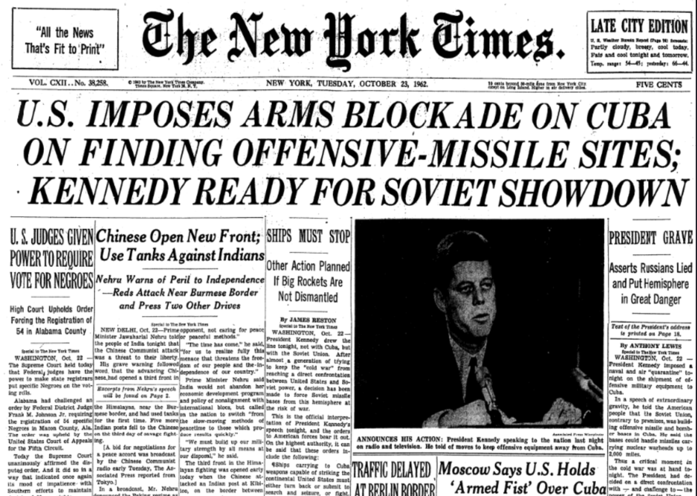

Brinksmanship Game
The Setting: Cuban Missile Crisis

This activity is a simplified, interactive model of brinksmanship. The classroom game captures the trade-off between credible threats and the risk of mutual destruction, and the role of asymmetric information about an opponent’s willingness to risk war.
Learning objectives
By the end of this activity you should be able to:
- Model a brinkmanship interaction in extensive form.
- Explain how asymmetric information about an opponent’s type affects incentives to escalate.
- Compute expected payoffs and compare strategic choices given a prior belief.
- Identify equilibrium concepts that help explain observed behavior (Bayesian Nash / Perfect Bayesian equilibrium, subgame perfection).
- Relate the simplified model to real-world brinkmanship and discuss what the model captures and omits.
Game Parameters
- Roles: One player is Kennedy, the other is Khrushchev.
- Hidden type: Only Khrushchev has a hidden type:
- With probability \(p\) (chosen by the instructor) Khrushchev is a Madman.
- With probability \(1-p\) Khrushchev is a Dove.
- Khrushchev privately observes this type; Kennedy does not.
- Move order: Kennedy moves first in each match; players then alternate turns (Kennedy, Khrushchev, Kennedy, …).
- Escalation risk mechanism:
- Use a standard six-sided die (d6) with faces 1–6.
- Maintain a countdown value C which starts at 6.
- When the current player chooses
Escalate:- Roll the d6 once.
- If the die outcome is strictly greater than C (roll > C), Nuclear War occurs immediately and the game ends.
- If roll ≤ C, no war occurs.
- Consequence: Because C starts at 6, the first
Escalatehas zero chance of producing Nuclear War (no roll > 6). Each subsequent unsuccessful escalation increases the probability of war on the next escalation by exactly 1/6 (when C=5 the only war roll is 6 → 1/6; when C=4 war on 5 or 6 → 2/6, etc.). - Note: A die roll is only performed on an
Escalate. ChoosingBack Downends the match immediately with the specified payoffs; there is no die roll when a player backs down.
- Termination and maximum stages:
- The game ends if either player chooses
Back Downor if anEscalateproduces Nuclear War. - If play reaches C = 0 (after six unsuccessful escalations), treat the next Escalate as guaranteed to cause Nuclear War (equivalently probability 1).
- The game ends if either player chooses
Payoffs (terminal outcomes)
- Kennedy:
- If Khrushchev Backs Down: Kennedy payoff = 10.
- If Kennedy Backs Down: Kennedy payoff = 8.
- If Nuclear War occurs: Kennedy payoff = 0.
- Khrushchev (depends on hidden type):
- If Khrushchev is a Dove:
- If Kennedy Backs Down: Khrushchev payoff = 10.
- If Khrushchev Backs Down: Khrushchev payoff = 5.
- If Nuclear War occurs: Khrushchev payoff = 0.
- If Khrushchev is a Madman:
- If Kennedy Backs Down: Khrushchev payoff = 10.
- If Khrushchev Backs Down: Khrushchev payoff = 0.
- If Nuclear War occurs: Khrushchev payoff = 3.
- If Khrushchev is a Dove:
Notes: - The Madman prefers war (3) to backing down (0), making some threats potentially more credible. The Dove prefers to avoid war and prefers backing down to war. - Kennedy’s payoffs are fixed and known to both players.
Setup and Procedure
- Pair up with a classmate. Assign roles: one of you is
Kennedy, the other isKhrushchev. - Give Khrushchev a two-sided card: the visible side shows the role; the hidden side shows the type. Khrushchev privately inspects their type (Madman or Dove).
- Set C := 6 (countdown starts at 6). Kennedy moves first.
- On a player’s turn, they choose either:
Escalate— roll the d6 and apply the Escalation risk mechanism above; orBack Down— the game ends immediately and payoffs are assigned accordingly.
- Record every action, die roll, remaining countdown C, and the resulting outcome (continue / war / end).
- Play multiple short matches (recommended: at least 2–5 matches): switch role and find a new classmate after you have played the each role against the same person.
- Keep track of your total score across all matches you play. The total score determines the winner of the activity.
Quick rules (one-page summary)
- Kennedy moves first; players alternate.
- Countdown C starts at 6. First Escalate has zero chance of war.
- Each unsuccessful Escalate reduces C by 1 ⇒ war probability on next Escalate increases by 1/6.
- Roll only when Escalate chosen.
- Back Down ends game immediately.
- Payoffs: see Payoffs section.
Example playthrough (worked example)
- Start: C = 6.
- Stage 1 (Kennedy’s turn): Kennedy chooses
Escalate.- Roll d6 = 3. Since 3 ≤ 6, no war occurs. Update C := 5.
- Play continues; next decision by Khrushchev.
- Stage 2 (Khrushchev’s turn): Khrushchev chooses
Escalate.- Roll d6 = 6. Since 6 > 5, Nuclear War occurs immediately.
- Terminal payoffs: Kennedy = 0; Khrushchev = 0 if Dove, 3 if Madman.
- Remarks: The first Escalate had zero chance of war, but it increased the risk for the next escalation.
Record sheet (one line per stage — write this down)
For each match keep a table (or a line per stage) with these fields:
- Match ID: Can just be your actual names
- Khrushchev type (private to Khrushchev; reveal after match):
- Stage number:
- Player on turn (Kennedy / Khrushchev):
- Action chosen (Escalate / Back Down):
- If Escalate: die roll result (1–6):
- Outcome of action (war / no war / back down):
- Terminal? (Yes / No). If yes, final payoffs for both players:
- Kennedy’s stated belief p(Madman) at time of decision (optional but encouraged).
Example table:
| Match | Khrushchev type | Stage 2 | Player | Action | Die Roll | Outcome | payoffs |
|---|---|---|---|---|---|---|---|
| Dante, Jose | type = Dove | 1 | Kennedy | Escalate | NA | Nuclear War | Ke=0, Kh=0 |
| Dante, Jose | type = Dove | 2 | Khrushchev | Escalate | 6 | Nuclear War | Ke=0, Kh=0 |
Discussion Assignment (how to get participation credit)
Submit the following to Canvas:
- A record of at least 3 full matches (the record sheet above).
- A drawn extensive-form game for at least the first three decision nodes (show decision nodes, branches, possible die-roll outcomes as chance nodes, and information sets for Kennedy over Khrushchev’s type).
- A short written analysis answering:
- In the first match, what was your Bayesian prior for the probability of a Madman type? How did you update your belief as you played more matches?
- For Khrushchev, explain how the Dove’s incentives differ from the Madman’s. At what points (if any) would a Dove prefer to escalate? Would a Madman prefer to back down?
- Did you or your classmates try any form of communication strategies? Were they cheap talk or did they actually update your prior beliefs?
- Did you observe pooling or separating behavior in play? How did recorded behavior depend on Khrushchev’s actual type?
- Give an example of another real-world setting besides the Cuban Missile crisis in which Brinkmanship is relevant.
Hints:
- Let q be the probability of escalation leading to nuclear war at any stage. Compute the expected payoffs of Kruschev’s strategy to
EscalateorBack Down - Draw the last three stages of the extensive-form tree:
- If Khrushchev ends up in Stage 7 with the final decision to Defy leading to Nuclear War with 100% probability, what will he choose?
- Represent Kennedy’s uncertainty over Khrushchev’s type with an information set.
- To compute survival probabilities over several unsuccessful escalations, multiply the probabilities of rolling ≤ C at each attempted escalation path.
- On Kennedy’s first move, because C starts at 6, an immediate war is impossible; but his choice affects the future C and thus future war probabilities.
Play the Game
Make sure everyone understands the rules and records their play. Then use the “Begin Stage 1” link below to start the interactive stage (if available in your session):
Discussion
Guided modeling steps (recommended in-class)
- Write out a generalized expected utility equation for either player when choosing to Escalate.
- Draw out an extensive form tree for the last few stages of the game. Use pruning to simplify the tree by eliminating any dominated strategies.
- Compute expected payoffs symbolically for Kennedy’s first decision as a function of the prior p and of the future strategies of Khrushchev. Solve for a threshold p* such that Kennedy is indifferent between Escalate and Back Down (this is a useful analytic exercise).
- Discuss equilibrium candidates:
- Are there pooling equilibria where both types of Khrushchev behave the same?
- Are there separating equilibria where behavior reveals type? Which are credible once you apply sequential rationality / Bayesian updating?
Instructor facilitation notes
Suggested class timing (50–60 min):
- 5 min: Introduce objectives and rules (use the “Quick rules” slide).
- 5 min: Walk through the worked example and answer clarifying questions.
- 25 min: Students play 3–4 short matches in pairs; instructors circulate to collect 1–2 interesting match records.
- 15 min: Group debrief and modeling: ask a volunteer to draw the partial extensive form and lead computation of Kennedy’s first-move incentives.
- Optional: 5–10 min extra to discuss historical connections and extensions.
Teaching tips:
- Emphasize recording beliefs and actions — this generates data for class discussion.
- Make sure students understand that the first escalate has zero chance of war (C = 6), as this often confuses players.
- If time permits, re-run matches with the prior changed (e.g., p = 0.5) or with a smaller starting C to show parameter sensitivity.
- Encourage students to state their beliefs verbally before choosing — this helps surface signaling dynamics.
Variations and extensions
- Change the prior p(Madman) and re-run matches to see how play changes.
- Give both players hidden types (both could be Doves or Madmen).
- Let a player pay a small cost to make a threat partially credible (costly signal).
- Replace the d6 with a continuous risk-increase function and compute exact thresholds analytically.
References:
Dixit, Skeath, & Reiley (2014). Games of Strategy (4th Edition). W.W. Norton & Company. Chapter 14, 582-606.
Haun, P., & O’Hara, M. (2022). The Brinkmanship Game: Bargaining Under the Mutual Risk of Escalation. Journal of Political Science Education, 18(3), 379-389. DOI: 10.1080/15512169.2022.2036615
Harrington (2015). Games, Strategy, and Decision-Making (2nd Edition). Worth Publishers. 425-429.
Naval History and Heritage Command. Cuban Missile Crisis. https://www.history.navy.mil/browse-by-topic/wars-conflicts-and-operations/cuban-missile.html
National Security Archive, George Washington University. The Cuban Missile Crisis at 60: Nuclear Crisis Lasted 59 Days, Not Just 13. (2022). https://nsarchive.gwu.edu/briefing-book-special-exhibit/cuba-cuban-missile-crisis-russia-programs/2022-10-04/cuban-missile